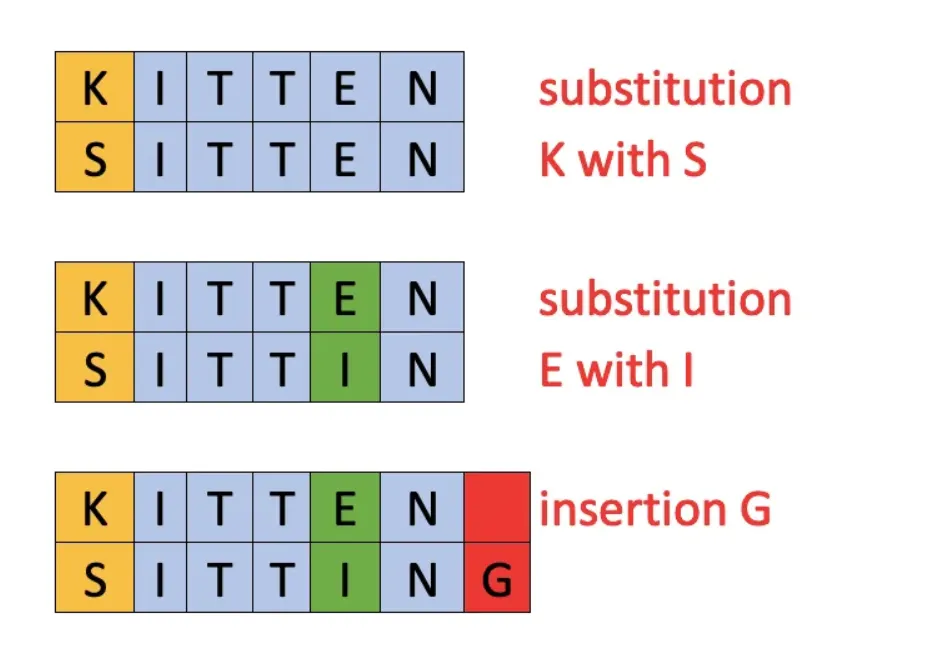
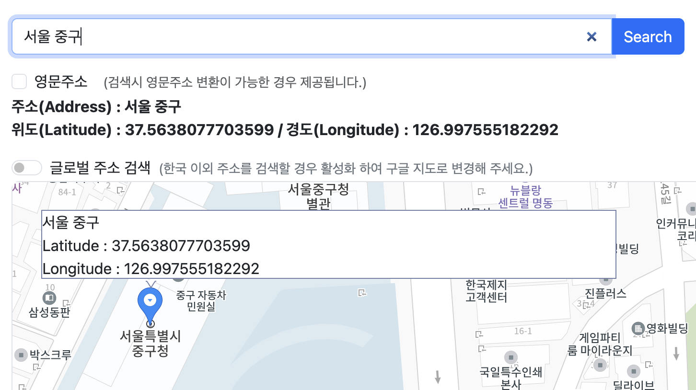
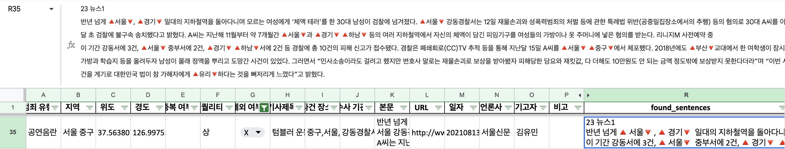

<!DOCTYPE html>
<html lang="en">
  <head>
    <meta charset="utf-8" />
    <meta name="viewport" content="width=device-width, initial-scale=1.0, maximum-scale=1.0, user-scalable=no" />

    <title></title>
    <link rel="stylesheet" href="dist/reveal.css" />
    <link rel="stylesheet" href="dist/theme/black.css" id="theme" />
    <link rel="stylesheet" href="plugin/highlight/monokai.css" />
	<link rel="stylesheet" href="css/layout.css" />
	<link rel="stylesheet" href="plugin/customcontrols/style.css">
	<link rel="stylesheet" href="plugin/chalkboard/style.css">

	<link rel="stylesheet" href="plugin/reveal-pointer/pointer.css" />


    <script defer src="dist/fontawesome/all.min.js"></script>

	<script type="text/javascript">
		var forgetPop = true;
		function onPopState(event) {
			if(forgetPop){
				forgetPop = false;
			} else {
				parent.postMessage(event.target.location.href, "app://obsidian.md");
			}
        }
		window.onpopstate = onPopState;
		window.onmessage = event => {
			if(event.data == "reload"){
				window.document.location.reload();
			}
			forgetPop = true;
		}

		function fitElements(){
			const itemsToFit = document.getElementsByClassName('fitText');
			for (const item in itemsToFit) {
				if (Object.hasOwnProperty.call(itemsToFit, item)) {
					var element = itemsToFit[item];
					fitElement(element,1, 1000);
					element.classList.remove('fitText');
				}
			}
		}

		function fitElement(element, start, end){

			let size = (end + start) / 2;
			element.style.fontSize = `${size}px`;

			if(Math.abs(start - end) < 1){
				while(element.scrollHeight > element.offsetHeight){
					size--;
					element.style.fontSize = `${size}px`;
				}
				return;
			}

			if(element.scrollHeight > element.offsetHeight){
				fitElement(element, start, size);
			} else {
				fitElement(element, size, end);
			}		
		}


		document.onreadystatechange = () => {
			fitElements();
			if (document.readyState === 'complete') {
				if (window.location.href.indexOf("?export") != -1){
					parent.postMessage(event.target.location.href, "app://obsidian.md");
				}
				if (window.location.href.indexOf("print-pdf") != -1){
					let stateCheck = setInterval(() => {
						clearInterval(stateCheck);
						window.print();
					}, 250);
				}
			}
	};


        </script>
  </head>
  <body>
    <div class="reveal">
      <div class="slides"><section  data-markdown><script type="text/template"><!-- .slide: class="drop" data-auto-animate="true" -->
<div class="" style="position: absolute; left: 0px; top: 0px; height: 700px; width: 960px; min-height: 700px; display: flex; flex-direction: column; align-items: center; justify-content: center" absolute="true">

**위치 정보** <!-- .element: style="font-size: 80px; display: flex; flex-direction: column; align-items: center; justify-content: center" align="center" --> 자동화  <!-- .element: style="font-size: 90px" -->
</div></script></section><section  data-markdown><script type="text/template"><!-- .slide: class="drop" data-auto-animate="true" -->
<div class="" style="position: absolute; left: 0px; top: 0px; height: 700px; width: 960px; min-height: 700px; display: flex; flex-direction: column; align-items: center; justify-content: center" absolute="true">

## 프로세스 

1. 주소 추출 - 1차 : LLM <!-- .element: style="font-size: 30px" -->
2. 주소 추출 - 2차 : 주소 정제 <!-- .element: style="font-size: 30px" class="fragment" -->
3. 좌표 변환 : 파이썬 패키지 <!-- .element: style="font-size: 30px" class="fragment" -->
4. 주소 검수 : HITL <!-- .element: style="font-size: 30px" class="fragment" -->
</div></script></section><section ><section data-markdown><script type="text/template"><!-- .slide: class="drop" data-auto-animate="true" -->
<div class="" style="position: absolute; left: 0px; top: 0px; height: 700px; width: 960px; min-height: 700px; display: flex; flex-direction: column; align-items: center; justify-content: center" absolute="true">

## 1. 주소 추출 - 1차

언어모델  <!-- .element: style="font-size: 40px; display: flex; flex-direction: column; align-items: center; justify-content: center" align="center" -->
</div></script></section><section data-markdown><script type="text/template"><!-- .slide: class="drop" -->
<div class="" style="position: absolute; left: 0px; top: 0px; height: 700px; width: 960px; min-height: 700px; display: flex; flex-direction: column; align-items: center; justify-content: center" absolute="true">

### 언어모델

<style>
	.highlight{
		color: yellow;
	}
</style>


<div class="block">

<!-- .element: style="font-size: 32px; margin: 10px; display: flex; flex-direction: column; align-items: center; justify-content: space-evenly" align="justify" -->

<div class="block">

<!-- .element: style="background-color: white" -->


</div>

 

Ollama

_(2024년 5월)_  <!-- .element: style="font-size: 18px" -->  
gemma:2b, phi-2:2.7b  
_(2025년 11월)_  <!-- .element: style="font-size: 18px" -->  
**gemma3:1b**, qwen-3:1.7b, llama3.2:3b  <!-- .element: class="highlight" -->  

</div>
</div>

<aside class="notes"><ul>
<li>ollama - open source llm</li>
<li>more slm options</li>
<li>고성능 컴퓨터가 아닌..</li>
</ul>
</aside></script></section><section data-markdown><script type="text/template"><!-- .slide: class="drop" data-auto-animate="true" -->
<div class="" style="position: absolute; left: 0px; top: 0px; height: 700px; width: 960px; min-height: 700px; display: flex; flex-direction: column; align-items: center; justify-content: center" absolute="true">

### 프롬프트 

```python
"""
- 기사에서 '주소', '누가', '언제', '어디서', '무엇을' 정보를 찾을 것.
- 기타 모든 지역 정보를 찾을 것.
- 가장 중요한 정보는 '주소' 정보를 찾는 것.
- 주소명과 주소명 사이는 띄어서 표시할 것.
- 주소가 여러개일 경우 한칸 띄어서 표시할 것.
- 다음과 같은 json 포맷으로 답할 것.
- {"address": "", "who": "", "when": "", "where": "", "what": "", "other": ""}
"""
```
</div>

<aside class="notes"><ul>
<li>like chatgpt </li>
<li>&#39;address&#39; than &#39;where&#39;</li>
<li>기타 지역을 추정할 수 있는 정보 </li>
<li>json</li>
</ul>
</aside></script></section><section data-markdown><script type="text/template"><!-- .slide: class="drop" data-auto-animate="true" -->
<div class="" style="position: absolute; left: 0px; top: 0px; height: 700px; width: 960px; min-height: 700px; display: flex; flex-direction: column; align-items: center; justify-content: center" absolute="true">

### 추출 결과 

```json
{
	"address": "울산 남구 삼산동 농수산물도매시장",
	"who": "30대 남성 A 씨",
	"when": "2023년 2월 22일 오전 11시30분",
	"where": "울산시",
	"what": "도로를 활보하고 주차 중인 차량에 올라타 주먹으로 앞 유리를 가격하고 차량을 파손했다.",
	"other": ""
}
```
</div>

<aside class="notes"><ul>
<li>better results than a year ago</li>
</ul>
</aside></script></section></section><section ><section data-markdown><script type="text/template"><!-- .slide: class="drop" data-auto-animate="true" -->
<div class="" style="position: absolute; left: 0px; top: 0px; height: 700px; width: 960px; min-height: 700px; display: flex; flex-direction: column; align-items: center; justify-content: center" absolute="true">

## 2. 주소 추출 - 2차

주소 정제 <!-- .element: style="font-size: 40px; display: flex; flex-direction: column; align-items: center; justify-content: space-evenly" align="justify" -->
</div></script></section><section data-markdown><script type="text/template"><!-- .slide: class="drop" data-auto-animate="true" -->
<div class="" style="position: absolute; left: 0px; top: 0px; height: 700px; width: 960px; min-height: 700px; display: flex; flex-direction: column; align-items: center; justify-content: center" absolute="true">

### 주소 오류 <!-- .element: style="display: flex; flex-direction: column; align-items: center; justify-content: space-evenly" align="justify" -->

<div class="block">

<!-- .element: style="font-size: 20px; display: flex; flex-direction: column; align-items: center; justify-content: space-evenly" align="justify" -->

울산 남구 삼산동
_농수산물도매시장_ <!-- .element: style="color: red" class="fragment fade-out" -->

</div>


<div class="block">

<!-- .element: style="width: 900px" class="fragment fade-out" -->

```python
{
	# 추출 결과 없음
}
```

</div>


<div class="block">

<!-- .element: style="width: 900px" class="fragment fade-up" -->

```python
{
	'latitude': 35.54126, 
	'longitude': 129.34388, 
	'geocoded_address': '삼산동, 남구, 울산광역시, 대한민국'
}
```

</div>
</div>

<aside class="notes"><ul>
<li>fitting for api</li>
</ul>
</aside></script></section><section data-markdown><script type="text/template"><!-- .slide: class="drop" data-auto-animate="true" -->
<div class="" style="position: absolute; left: 0px; top: 0px; height: 700px; width: 960px; min-height: 700px; display: flex; flex-direction: column; align-items: center; justify-content: center" absolute="true">

### 정제 과정
</div></script></section><section data-markdown><script type="text/template"><!-- .slide: class="drop" -->
<div class="" style="position: absolute; left: 0px; top: 0px; height: 700px; width: 960px; min-height: 700px; display: flex; flex-direction: column; align-items: center; justify-content: center" absolute="true">

<div class="block">

<!-- .element: style="font-size: 20px; display: flex; flex-direction: column; align-items: center; justify-content: space-evenly" align="justify" -->

대한민국 주소 데이터프레임

<div class="block">

<!-- .element: style="font-size: 20px; background-color: slategrey; display: flex; flex-direction: column; align-items: center; justify-content: space-evenly" align="justify" -->

|     | lv0 | lv1  | lv2     | lv3 | lv4              | full_address |
| --- | --- | ---- | ------- | --- | ---------------- | ------------ |
| 0   | 충남  | 충청남도 | 천안시 동남구 | 대흥동 | | 충청남도 천안시 동남구 대흥동 |
| 1   | 충남  | 충청남도 | 천안시 동남구 | 성황동 | | 충청남도 천안시 동남구 성황동 |
| 2   | 충남  | 충청남도 | 천안시 동남구 | 문화동 | | 충청남도 천안시 동남구 문화동 |
| 3   | 충남  | 충청남도 | 천안시 동남구 | 사직동 | | 충청남도 천안시 동남구 사직동 |
| 4   | 충남  | 충청남도 | 천안시 동남구 | 영성동 | | 충청남도 천안시 동남구 영성동 |
</div>

  

...  

- 2025/10/27 고시 **전국 법정동/행정동 현황** (XLS) : 네이버 블로그 (naver.com) | [Link](https://m.blog.naver.com/s9soft/221658209696)   
- 국토교통부_전국 법정동 (공공데이터포털) | [Link](https://www.data.go.kr/data/15063424/fileData.do?recommendDataYn=Y)
</div>

<aside class="notes"><ul>
<li><p>someone uploaded the data.  </p>
</li>
<li><p>official data now  </p>
</li>
<li><p>lv0 -&gt; lv1 -&gt; .. -&gt; lv4</p>
</li>
</ul>
</aside></script></section><section data-markdown><script type="text/template"><!-- .slide: class="drop" -->
<div class="" style="position: absolute; left: 0px; top: 0px; height: 700px; width: 960px; min-height: 700px; display: flex; flex-direction: column; align-items: center; justify-content: center" absolute="true">

<!-- style="font-size: 30px;" align="justify" -->




<div class="block">

<!-- .element: style="font-size: 30px; display: flex; flex-direction: column; align-items: center; justify-content: space-evenly" align="justify" -->

- TheFuzz 파이썬 문자열 매칭
	- (구) FuzzyWuzzy <!-- .element: style="font-size: 18px" -->  
	- seatgeek/thefuzz <!-- .element: style="font-size: 18px" --> | [Link](https://github.com/seatgeek/thefuzz)  
	- RapidFuzz : 속도 개선 <!-- .element: style="font-size: 18px" --> | [Link](https://rapidfuzz.github.io/RapidFuzz/index.html)  

- 두 문자열이 얼마나 비슷한지 점수를 매김
	- Levenshtein 거리 알고리즘 <!-- .element: style="font-size: 18px" -->

</div>
</div>

<aside class="notes"><ul>
<li>no matter.  </li>
<li>just use.</li>
</ul>
</aside></script></section><section data-markdown><script type="text/template"><!-- .slide: class="drop" -->
<div class="" style="position: absolute; left: 0px; top: 0px; height: 700px; width: 960px; min-height: 700px; display: flex; flex-direction: column; align-items: center; justify-content: center" absolute="true">

<div class="block">

<!-- .element: style="width: 900px; font-size: 30px" -->

오타가 있어도 처리 가능

```python
{
	'address': '인천 연구수 옥련동', 
	'who': '20대 남성 A씨', 
	'when': '21일 밤 10시30분께', 
	'where': '인천 연수경찰서', 
	'what': '피해 고등학생 등 주민 5명을 주먹과 발 등으로 때려 눈과 목 부위 등을 다치게 한 혐의로 입건', 
	'other': ''
}
```

</div>
</div>

<aside class="notes"><ul>
<li>article often has an error</li>
</ul>
</aside></script></section><section data-markdown><script type="text/template"><!-- .slide: class="drop" data-auto-animate="true" -->
<div class="" style="position: absolute; left: 0px; top: 0px; height: 700px; width: 960px; min-height: 700px; display: flex; flex-direction: column; align-items: center; justify-content: center" absolute="true">

### 정제 결과

<div class="block">

<!-- .element: style="width: 900px; font-size: 30px" -->

```python
{
	"address": "울산 남구 삼산동 농수산물도매시장",
	"matched_lv0": "울산",
	"matched_lv1": "울산광역시",
	"matched_lv2": "남구",
	"matched_lv3": "삼산동",
	"matched_lv4": "",44
	"match_score": 45.0,
	"matched_address_display": "울산광역시 남구 삼산동"
}
```

</div>
</div>

<aside class="notes"><ul>
<li>score.  </li>
<li>real address only.  </li>
<li>now ready to use api.</li>
</ul>
</aside></script></section></section><section ><section data-markdown><script type="text/template"><!-- .slide: class="drop" data-auto-animate="true" -->
<div class="" style="position: absolute; left: 0px; top: 0px; height: 700px; width: 960px; min-height: 700px; display: flex; flex-direction: column; align-items: center; justify-content: center" absolute="true">

## 3. 좌표 변환

GeoPy  <!-- .element: style="font-size: 40px; display: flex; flex-direction: column; align-items: center; justify-content: space-evenly" align="justify" -->
</div>

<aside class="notes"><ul>
<li>python package.</li>
</ul>
</aside></script></section><section data-markdown><script type="text/template"><!-- .slide: class="drop" -->
<div class="" style="position: absolute; left: 0px; top: 0px; height: 700px; width: 960px; min-height: 700px; display: flex; flex-direction: column; align-items: center; justify-content: center" absolute="true">

<div class="block">

<!-- .element: style="width: 800px" -->

*https://geopy.readthedocs.io/* <!-- .element: style="font-size: 20px; display: flex; flex-direction: column; align-items: flex-end; justify-content: space-evenly" align="right" --> 


</div>


Nominatim  <!-- .element: style="font-size: 30px; display: flex; flex-direction: column; align-items: center; justify-content: center" align="center" -->
_Open Street Map_   <!-- .element: style="font-size: 20px; display: flex; flex-direction: column; align-items: center; justify-content: center" align="center" -->
</div>

<aside class="notes"><ul>
<li>usage limit.</li>
</ul>
</aside></script></section><section data-markdown><script type="text/template"><!-- .slide: class="drop" -->
<div class="" style="position: absolute; left: 0px; top: 0px; height: 700px; width: 960px; min-height: 700px; display: flex; flex-direction: column; align-items: center; justify-content: center" absolute="true">

```python
from geopy.geocoders import Nominatim

geolocator = Nominatim(user_agent="my_geocoder")
location = geolocator.geocode("서울영등포경찰서")

print(location.address)
print((location.latitude, location.longitude))
print(location.raw)
```

```json
서울영등포경찰서 여의도지구대, 120, 여의공원로, 여의도동, 여의동, 영등포구, 서울특별시, 07241, 대한민국 
(37.529616 126.9267097) 
{'place_id': 206916100, 'licence': 'Data © OpenStreetMap contributors, ODbL 1.0. [http://osm.org/copyright](http://osm.org/copyright)', 'osm_type': 'way', 'osm_id': 254642317, 'lat': '37.5296160', 'lon': '126.9267097', 'class': 'amenity', 'type': 'police', 'place_rank': 30, 'importance': 7.29800869763793e-05, 'addresstype': 'amenity', 'name': '서울영등포경찰서 여의도지구대', 'display_name': '서울영등포경찰서 여의도지구대, 120, 여의공원로, 여의도동, 여의동, 영등포구, 서울특별시, 07241, 대한민국', 'boundingbox': ['37.5295430', '37.5296898', '126.9266117', '126.9268074']}
```
</div>

<aside class="notes"><ul>
<li>address name -&gt; coordinate</li>
</ul>
</aside></script></section><section data-markdown><script type="text/template"><!-- .slide: class="drop" -->
<div class="" style="position: absolute; left: 0px; top: 0px; height: 700px; width: 960px; min-height: 700px; display: flex; flex-direction: column; align-items: center; justify-content: center" absolute="true">

```python
from geopy.geocoders import Nominatim

geolocator = Nominatim(user_agent="my_geocoder")
location = geolocator.reverse("37.529616, 126.9267097")

print(location.address)
print((location.latitude, location.longitude))
print(location.raw)
```

```json
여의도지구대, 120, 여의공원로, 여의도동, 여의동, 영등포구, 서울특별시, 07241, 대한민국 
(37.5296221 126.9267079) 
{'place_id': 401145488, 'licence': 'Data © OpenStreetMap contributors, ODbL 1.0. [http://osm.org/copyright](http://osm.org/copyright)', 'osm_type': 'node', 'osm_id': 12642237585, 'lat': '37.5296221', 'lon': '126.9267079', 'class': 'amenity', 'type': 'police', 'place_rank': 30, 'importance': 7.29800869763793e-05, 'addresstype': 'amenity', 'name': '여의도지구대', 'display_name': '여의도지구대, 120, 여의공원로, 여의도동, 여의동, 영등포구, 서울특별시, 07241, 대한민국', 'address': {'amenity': '여의도지구대', 'house_number': '120', 'road': '여의공원로', 'quarter': '여의도동', 'suburb': '여의동', 'borough': '영등포구', 'city': '서울특별시', 'ISO3166-2-lvl4': 'KR-11', 'postcode': '07241', 'country': '대한민국', 'country_code': 'kr'}, 'boundingbox': ['37.5295721', '37.5296721', '126.9266579', '126.9267579']}
```
</div>

<aside class="notes"><ul>
<li>coordinate -&gt; address</li>
</ul>
</aside></script></section></section><section ><section data-markdown><script type="text/template"><!-- .slide: class="drop" data-auto-animate="true" -->
<div class="" style="position: absolute; left: 0px; top: 0px; height: 700px; width: 960px; min-height: 700px; display: flex; flex-direction: column; align-items: center; justify-content: center" absolute="true">

## 4. 주소 검수 

(HITL) 추출된 주소와 좌표, 사건 내용 적합성  <!-- .element: style="font-size: 40px; display: flex; flex-direction: column; align-items: center; justify-content: space-evenly" align="justify" -->
</div>

<aside class="notes"><ul>
<li>human in the loop.</li>
</ul>
</aside></script></section><section data-markdown><script type="text/template"><!-- .slide: class="drop" -->
<div class="" style="position: absolute; left: 0px; top: 0px; height: 700px; width: 960px; min-height: 700px; display: flex; flex-direction: column; align-items: center; justify-content: center" absolute="true">

<div class="block">

<!-- .element: style="width: 900px; font-size: 30px; background-color: slategrey; display: flex; flex-direction: column; align-items: center; justify-content: center" align="left" -->

🔺대구🔻지법 형사8단독(부장 박성준)은 공연음란 혐의로 기소된 공무원 A씨(29)에게 벌금 200만원을 선고했다고 3일 밝혔다. A씨는 지난 2월 22일 오후 8시 53분쯤 🔺대구🔻 🔺북구🔻의 한 도로에서...  <!-- .element: style="font-size: 30px; display: flex; flex-direction: column; align-items: center; justify-content: center" align="left" -->


</div>
</div>

<aside class="notes"><ul>
<li>flag </li>
<li>make easy to read.</li>
</ul>
</aside></script></section><section data-markdown><script type="text/template"><!-- .slide: class="drop" -->
<div class="" style="position: absolute; left: 0px; top: 0px; height: 700px; width: 960px; min-height: 700px; display: flex; flex-direction: column; align-items: center; justify-content: center" absolute="true">

<div class="block">

<!-- .element: style="width: 900px; font-size: 30px" -->

정제된 결과를 사람이 검수   







</div>
</div>

<aside class="notes"><ul>
<li>right content.  </li>
<li>right coordinate.  </li>
<li>category  </li>
<li>duplacate</li>
</ul>
</aside></script></section></section><section  data-markdown><script type="text/template"><!-- .slide: class="drop" data-auto-animate="true" -->
<div class="" style="position: absolute; left: 0px; top: 0px; height: 700px; width: 960px; min-height: 700px; display: flex; flex-direction: column; align-items: center; justify-content: center" absolute="true">

## 추후 개선점 <!-- .element: style="display: flex; flex-direction: column; align-items: center; justify-content: center" align="justify" -->

<div class="block">

<!-- .element: style="width: 900px; font-size: 30px; display: flex; flex-direction: column; align-items: center; justify-content: center" align="justify" -->

<div class="block">

<!-- .element: style="width: 900px; font-size: 30px; display: flex; flex-direction: column; align-items: center; justify-content: center" class="fragment fade-out" align="justify" -->

기타 지역 정보 활용 <!-- .element: style="display: flex; flex-direction: column; align-items: flex-start; justify-content: space-evenly" align="left" -->

```json
{
	"address": "신연수",
	"where": "수원지방법원 형사항소부"
}
```

</div>


<div class="block">

<!-- .element: style="width: 900px; font-size: 30px; display: flex; flex-direction: column; align-items: center; justify-content: center" class="fragment" align="justify" -->

관련성 없는 기사 필터링 <!-- .element: style="display: flex; flex-direction: column; align-items: flex-start; justify-content: space-evenly" align="left" -->

```json
{
	"address": "서울시 중구",
	"who": "장동주",
	"when": "2023년 17일",
	"where": "OCN 수목드라마 ‘미스터 기간제’",
	"what": "기무혁이 김한수를 싸워줄 변호사다. 7년만 살자고 단호하게 말했다. 폭행 사실은 인정하되 살해 의도가 없었음을 인정하면 7년 받을 수 있다."
}
```

</div>
</div>

<aside class="notes"><ul>
<li><p>etc.  </p>
</li>
<li><p>duplicate   </p>
</li>
<li><p>category</p>
</li>
</ul>
</aside></script></section><section  data-markdown><script type="text/template"><!-- .slide: class="drop" data-auto-animate="true" -->
<div class="" style="position: absolute; left: 0px; top: 0px; height: 700px; width: 960px; min-height: 700px; display: flex; flex-direction: column; align-items: center; justify-content: center" absolute="true">

## 궁금하신 점 있으신가요?
</div></script></section></div>
    </div>

    <script src="dist/reveal.js"></script>

    <script src="plugin/markdown/markdown.js"></script>
    <script src="plugin/highlight/highlight.js"></script>
    <script src="plugin/zoom/zoom.js"></script>
    <script src="plugin/notes/notes.js"></script>
    <script src="plugin/math/math.js"></script>
	<script src="plugin/mermaid/mermaid.js"></script>
	<script src="plugin/chart/chart.min.js"></script>
	<script src="plugin/chart/plugin.js"></script>
	<script src="plugin/menu/menu.js"></script>
	<script src="plugin/customcontrols/plugin.js"></script>
	<script src="plugin/chalkboard/plugin.js"></script>
	<script src="plugin/reveal-pointer/pointer.js"></script>
	<script src="plugin/elapsed-time-bar/elapsed-time-bar.js"></script>

    <script>
      function extend() {
        var target = {};
        for (var i = 0; i < arguments.length; i++) {
          var source = arguments[i];
          for (var key in source) {
            if (source.hasOwnProperty(key)) {
              target[key] = source[key];
            }
          }
        }
        return target;
      }

	  function isLight(color) {
		let hex = color.replace('#', '');

		// convert #fff => #ffffff
		if(hex.length == 3){
			hex = `${hex[0]}${hex[0]}${hex[1]}${hex[1]}${hex[2]}${hex[2]}`;
		}

		const c_r = parseInt(hex.substr(0, 2), 16);
		const c_g = parseInt(hex.substr(2, 2), 16);
		const c_b = parseInt(hex.substr(4, 2), 16);
		const brightness = ((c_r * 299) + (c_g * 587) + (c_b * 114)) / 1000;
		return brightness > 155;
	}

	var bgColor = getComputedStyle(document.documentElement).getPropertyValue('--r-background-color').trim();
	var isLight = isLight(bgColor);

	if(isLight){
		document.body.classList.add('has-light-background');
	} else {
		document.body.classList.add('has-dark-background');
	}

      // default options to init reveal.js
      var defaultOptions = {
        controls: true,
        progress: true,
        history: true,
        center: true,
        transition: 'default', // none/fade/slide/convex/concave/zoom
        plugins: [
          RevealMarkdown,
          RevealHighlight,
          RevealZoom,
          RevealNotes,
          RevealMath.MathJax3,
		  RevealMermaid,
		  RevealChart,
		  RevealCustomControls,
		  RevealMenu,
	      RevealPointer,
		  RevealChalkboard, 
		  ElapsedTimeBar
        ],


    	allottedTime: 120 * 1000,

		mathjax3: {
			mathjax: 'plugin/math/mathjax/tex-mml-chtml.js',
		},
		markdown: {
		  gfm: true,
		  mangle: true,
		  pedantic: false,
		  smartLists: false,
		  smartypants: false,
		},

		mermaid: {
			theme: isLight ? 'default' : 'dark',
		},

		customcontrols: {
			controls: [
				{id: 'toggle-overview',
				title: 'Toggle overview (O)',
				icon: '<i class="fa fa-th"></i>',
				action: 'Reveal.toggleOverview();'
				},
				{ icon: '<i class="fa fa-pen-square"></i>',
				title: 'Toggle chalkboard (B)',
				action: 'RevealChalkboard.toggleChalkboard();'
				},
				{ icon: '<i class="fa fa-pen"></i>',
				title: 'Toggle notes canvas (C)',
				action: 'RevealChalkboard.toggleNotesCanvas();'
				},
			]
		},
		menu: {
			loadIcons: false
		}
      };

      // options from URL query string
      var queryOptions = Reveal().getQueryHash() || {};

      var options = extend(defaultOptions, {"width":960,"height":700,"margin":0.04,"controls":true,"progress":true,"slideNumber":true,"transition":"fade","transitionSpeed":"default"}, queryOptions);
    </script>

    <script>
      Reveal.initialize(options);
    </script>
  </body>

  <!-- created with Advanced Slides -->
</html>
